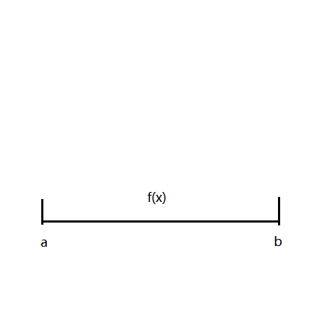
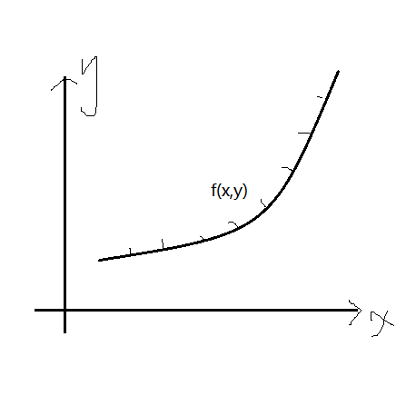
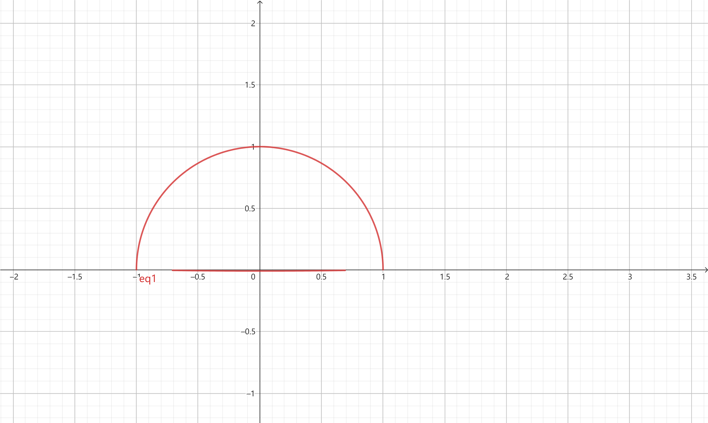
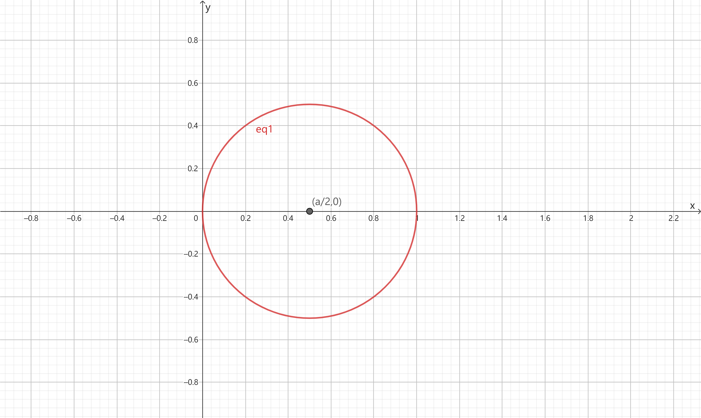
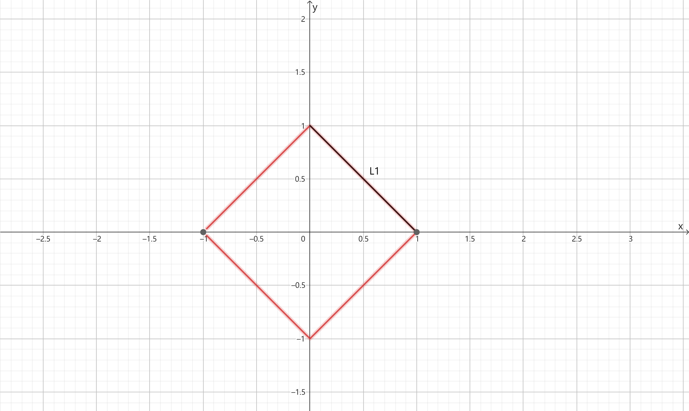
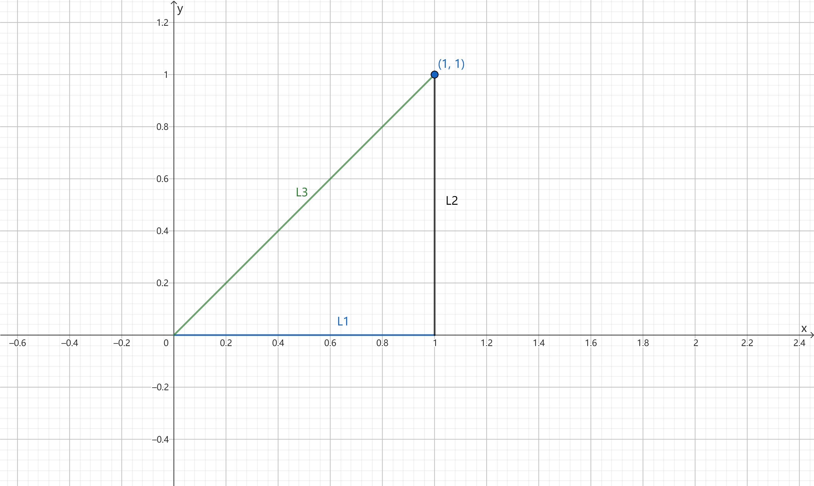
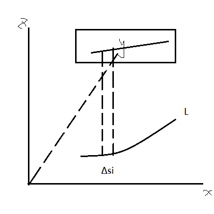
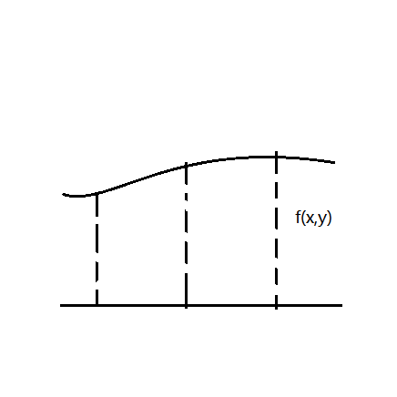
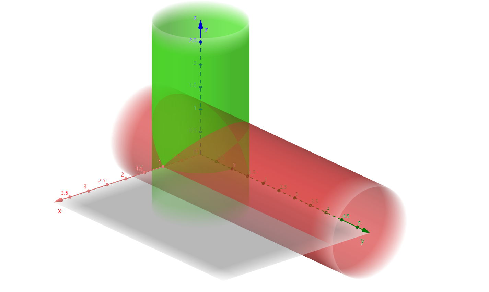

§10.1 对弧长的曲线积分（I类曲线积分）
引例
| 一维 |
二维 |
|  |
 |
| m=∫abf(x)dx |
mi≈f(ξi,ηi)，M≈i=1∑nf(ξi,ηi)Δsi=λ→0limi=1∑nf(ξi,ηi)Δsi |
一、定义
f(x,y) 在曲线 L 上有界（分段光滑）
- 任意分割 Δsi
- 任意取点 (ξi,ηi)∈Δsi
若 λ→0limi=1∑nf(ξi,ηi)Δsi 存在，则称该极限为I类曲线积分，记为
∫Lf(x,y)dss为弧长元素∮Lf(x,y)ds封闭曲线∮Γf(x,y,z)ds空间曲线
二、性质
-
∫L(af+bg)ds=a∫Lfds+b∫Lgds
-
可加性 L=L1+L2，∫Lfds=∫L1fds+∫L2ds
-
对称性
∫Lf(x,y)ds={2∫L1f(x,y)ds0f(x,y)=f(−x,y)f(x,y)=−f(−x,y)
(L关于y轴对称)
三、计算
转化为定积分
定理： 设 f(x,y) 在 L 上连续，L 的参数方程为 {x=ϕ(t)y=ψ(t) (a≤t≤β)，其中 ϕ(t) 和 ψ(t) 在 [α,β] 上具有一阶导数，且 ϕ′2(t)+ψ′2(t)=0，则 ∫Lf(x,y)ds=∫αβf[ϕ(t),ψ(t)]ϕ′2(t)+ψ′2(t)dt(α<β)
- Γ:⎩⎨⎧x=ϕ(t)y=ψ(t)z=ω(t)(α≤t≤β)，∫Γf(x,y,z)ds=∫αβf(ϕ(t),ψ(t),ω(t))ϕ′(t)2+ψ′(t)2+ω′(t)2dt(α<β)
- L:y=ϕ(x),a≤x≤b，∫Lf(x,y)ds=∫abf(x,ϕ(x))1+ϕ′(x)2dx
- L:x=ψ(y),c≤y≤d，∫Lf(x,y)ds=∫cdf(ψ(y),y)ϕ′(y)2+1dy
- L:ρ=ρ(θ),α≤θ≤β，∫Lf(x,y)ds=∫αβf[ρ(θ)cosθ,ρ(θ)sinθ]ρ2(θ)+ρ′2(θ)dθ
例题
-
I=∫L(x2+y2)ds，L:x2+y2=a2 且 y≥0（a>0）
解：
-
法一：L:{x=acosty=asintt∈[0,π]
I=∫0π[(acost)2+(asint)2](−asint)2+(acost)2dt=∫0πa2⋅adt=πa3
-
法二：I=∫La2ds=a2∫Lds=a2⋅πa=πa3（积分曲线的弧长）
-
I=∫Lx2+y2ds，L:x2+y2=ax(a>0)
解：
- 法一：L=⎩⎨⎧x=2a+2acosty=2asintt∈[0,2π]，I=∫02πa(2a+2acost)(−2asint)2+(2acost)2dt=2a2
- 法二：ρ(θ)=2θ,θ∈[−2π,2π]，I=∫−2π2πa⋅acosθ⋅acosθ(−asinθ)2+(acosθ)2dθ=2a2
-
I=∫L∣x∣ds，L:∣x∣+∣y∣=1
解：
-
法一，L关于y、x轴对称
I=4∫L1∣x∣ds=4∫L1xds=4∫01x1+(−1)2dx=42∫01xdx=22
-
法二，L关于 y=x 对称
I=∫L∣x∣ds=21∫L(∣x∣+∣y∣)ds=21∫L1ds=22
-
I=∫Lyds，L: 以(0,0)、(1,0)、(1,1) 为顶点的三角形

解：L=L1+L2+L3
- L1:y=0,0≤x≤1，∫L1yds=0
- L2:x=1,0≤y≤1，∫L2yds=∫01y⋅02+12dy=21
- L3:y=x,0≤x≤1，∫L3yds=∫01x⋅12+12dx=22
∴∫Lyds=21+2
-
I=∫Γ(x2+y2)ds，Γ:⎩⎨⎧x=acosty=asintz=kt(0≤t≤2π)
解：
I=∫02πa2(−asint)2+(acost)2+k2dt=2πa2a2+k2
-
I=∫Γ(2y2+z2)ds，Γ:{x2+y2+z2=a2y=x 的交线
解：
- 法一：在 Γ 上，2y2+z2=a2，I=∫Γa2ds=a2∫Γds=a2⋅2πa2=2πa3
- 法二：2y2+z2=a2 的参数方程是 ⎩⎨⎧x=2acosty=2acostz=asint0≤t≤2π，I=∫02π[2⋅(2acost)2+(asint)2](−2asint)2+(−2asint)2+(acost)2dt=2πa3
-
I=∫Γ(x2+y2+z2)ds，Γ:⎩⎨⎧x2+y2+z2=29x+z=1
解：
- 法一：消去z，x2+y2+(1−x)2=29，2(x−21)2+4y2=1，⎩⎨⎧x=21+2costy=2sintz=21−2cost，代入得 I=18π
- 法二：I=2a∫Γds=29⋅2π⋅2=18π
I类曲线积分的几何意义

I=∫Lf(x,y)ds=λ→0limi=1∑nf(ξi,ηi)Δsi
以 L 为底边，f(x,y) 为高的柱面面积
若 L 为直线，f(x,y)=C，A=SC

求柱面面积 ∫Lf(x,y)ds：
例题
-
求 x2+y2=a2 被 x2+z2=a2 所截部分面积（第一卦限）

解：L1(x2+y2=a2):{x=acosty=asint0≤t≤2π，f(x,y)=a2−x2
I=∫La2−x2dx=∫02πasint(−asint)2+(acost)2dt=a2
-
求 x32+y32=1 在 x2+y2+z2=1 内的面积（第一卦限）
解：L:x32+y32=1→{x=(cost)3y=(sint)30≤t≤2π，f(x,y)=1−x2−y2
I=∫L1−x2−y2ds=∫02π1−cos6t−sin6t+[3cost(−sint)]2+(3sin2tcost)2dt=3233π